AI OCR cho văn bản hành chính
Tự động đọc PDF, trích xuất thông tin cần nhập vào Văn phòng số và đo chất lượng trên benchmark có thể truy vết.
2.249 trang, nhiều nguồn và định dạng.
Document Success@5% · full inference.
Đánh giá khả năng phát triển giải pháp in-house cho UAT dự án VPS.
Từ nhập liệu thủ công đến dữ liệu có cấu trúc
Hiện trạng
Nhân viên đọc văn bản và nhập lại số ký hiệu, ngày ban hành, cơ quan, trích yếu… vào hệ thống.
Pain point
Khối lượng lớn làm tăng thời gian, công sức kiểm tra và nguy cơ sai sót; khó mở rộng theo nhu cầu xử lý.
Mục tiêu PoC
Kiểm chứng giải pháp OCR/KIE tự chủ, có thể điều chỉnh theo nghiệp vụ và từng bước thử nghiệm tại UAT VPS.
Định hướng: giảm phụ thuộc API bên thứ ba và tối ưu chi phí sau khi chứng minh được chất lượng trên cùng giao thức đánh giá.
Viettel Agile: học từ dữ liệu thật
Nhận diện pain point→Go Through
Khảo sát nghiệp vụ→Implement
Xây baseline→Learn
Benchmark & phân tích lỗi→Enable
Hướng tới áp dụng
Nhu cầu khách hàng là điểm xuất phát
Đối chiếu biểu mẫu với BA để phân biệt trường cần đọc từ PDF, trường người dùng nhập và trường hệ thống tự điền.
Tối ưu có căn cứ
Mỗi vòng cải tiến cần benchmark, trace và regression test; không sửa luật chỉ vì một tên file hoặc một đáp án GT.
Benchmark 100 PDF — đủ đa dạng để lộ điểm yếu
GT gắn theo tài liệu.
1–353 trang/tài liệu.
Chất lượng OCR thay đổi.
Print/digital PDF.
Loại văn bản
Quyết định, Công văn, Nghị quyết, Thông báo, Thông tư, Kế hoạch…
Trong 100 mẫu: Quyết định 30; Công văn 17.
Nguồn và chủ thể
Cơ quan Chính phủ, bộ/ngành, địa phương, sở giao dịch chứng khoán, doanh nghiệp…
Có scan, dấu mộc, chữ viết tay và tài liệu nhiều trang; chưa đủ phủ lớp hiếm.
Định nghĩa đầu ra trước khi đo độ chính xác
7 trường bắt buộc
type, title, code, documentDate, officeSender, priority_level, security_level.
5 trường đánh giá thêm
recipients, signer, first_recipients, signer_title, province.
13 key trong API, chỉ chấm 12 field
Theo chuẩn hiện hành, receiverDate giữ trong schema nhưng phải trả "" và không chấm. Bundle full inference này còn lưu giá trị legacy ở field đó; bản nháp loại khỏi phần đánh giá.
Document Success@5%: mọi required field có GT trong cùng một tài liệu đều phải đạt Exact hoặc Acceptable theo metric của field.
GT → chuẩn hóa benchmark → phân bucket Exact / Acceptable / Wrong / Missing / Hallucination / Correct Absent. Text thuộc nhóm F1@5% cho phép 0 < CER ≤ 5%; ngày, enum và nhóm F1 Exact cần khớp theo luật tương ứng.
Danh mục 13 trường API & tiêu chí đánh giá
| Mô tả ngắn tiếng Việt | Key API | Nhóm field | Metric đánh giá | Target F1 / NEM |
|---|---|---|---|---|
| Loại văn bản | type | Critical + required | F1 Exact (khớp tuyệt đối) | F1 ≥ 0,85 · NEM ≥ 0,75 |
| Trích yếu | title | Critical + required | F1@5% (CER ≤ 5%) | F1 ≥ 0,85 · NEM ≥ 0,75 |
| Số, ký hiệu | code | Critical + required | F1 Exact (gạch nối) | F1 ≥ 0,85 · NEM ≥ 0,75 |
| Ngày ban hành | documentDate | Critical + required | F1 Exact (dd/mm/yyyy) | F1 ≥ 0,85 · NEM ≥ 0,75 |
| Cơ quan ban hành | officeSender | Critical + required | F1@5% (CER ≤ 5%) | F1 ≥ 0,85 · NEM ≥ 0,75 |
| Độ khẩn | priority_level | Critical + required | F1 Exact (Enum) | F1 ≥ 0,85 · NEM ≥ 0,75 |
| Độ mật | security_level | Critical + required | F1 Exact (Enum) | F1 ≥ 0,85 · NEM ≥ 0,75 |
| Nơi nhận | recipients | Critical + optional | F1@5% (CER ≤ 5%) | F1 ≥ 0,85 · NEM ≥ 0,75 |
| Người ký | signer | Critical + optional | F1 Exact (khớp tên) | F1 ≥ 0,85 · NEM ≥ 0,75 |
| Kính gửi | first_recipients | Critical + optional | F1@5% (CER ≤ 5%) | F1 ≥ 0,85 · NEM ≥ 0,75 |
| Chức danh ký | signer_title | Critical + optional | F1@5% (CER ≤ 5%) | F1 ≥ 0,85 · NEM ≥ 0,75 |
| Địa danh ban hành | province | Non-critical + optional | F1 Exact | F1 ≥ 0,85 · NEM ≥ 0,75 |
| Ngày tiếp nhận | receiverDate | Out of scope | Không chấm (luôn trả "") | — (Ngoài phạm vi) |
Team đã xây gì, và pipeline chạy ra sao?
Chuẩn bị
Thu thập PDF; xây GT; chốt quy tắc nghiệp vụ và 13-field API với BA.
Thử nghiệm
Các thành viên khảo sát pipeline riêng; chọn pipeline 01 làm baseline để demo.
Đo & truy vết
Chấm chất lượng, thời gian, RAM/GPU; giữ ảnh trang, bbox và OCR nguồn để soi lỗi.
Demo dùng kết quả full inference: PDF → model → extraction, không trộn chỉ số tốc độ/tài nguyên từ extraction replay.
Demo theo 3 mức độ: dễ → phổ biến → khó
Đầu ra đúng
Quyết định 3116 và Nghị quyết 26/2026: không có field Wrong/Missing/Hallucination.
Quyết định / Công văn
1666 sạch; 8906 đạt đủ 7 required nhưng vẫn miss 2 field optional.
Scan, dấu, chữ viết tay
8931, 8948, 29+CT cho thấy lỗi tập trung ở ngày, dấu khẩn và vùng ký.
Văn bản rõ: trích xuất đúng và truy vết được
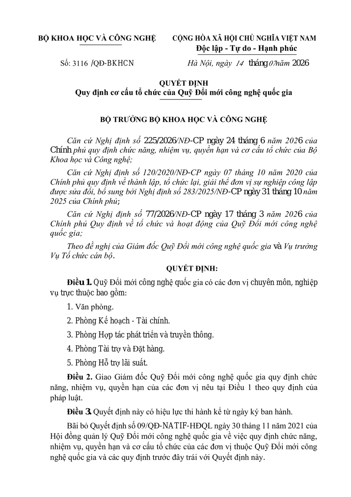
3116+QĐ-BKHCN · 2 trang
4,37 giây/file. Document Success PASS. Trong 12 field được chấm theo policy hiện tại: 10 Exact, title Acceptable, first_recipients Correct Absent.
26+2026+NQ-HĐND · 5 trang
7,93 giây/file. Document Success PASS; không có cả bucket Acceptable, Wrong, Missing hay Hallucination.
Correct Absent nghĩa là GT và prediction đều rỗng, không phải “pipeline đã đọc được Kính gửi”.
2 dạng chiếm 47% tập mẫu: Quyết định và Công văn
Quyết định · 1666+QĐ-TTg
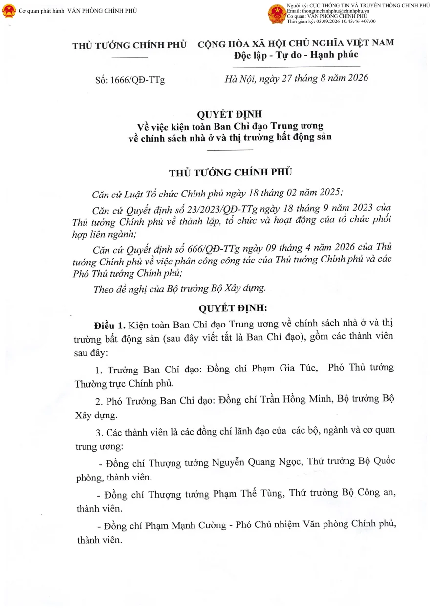
PASS Không có Wrong/Missing/Hallucination.
Công văn · 8906+VPCP-CN
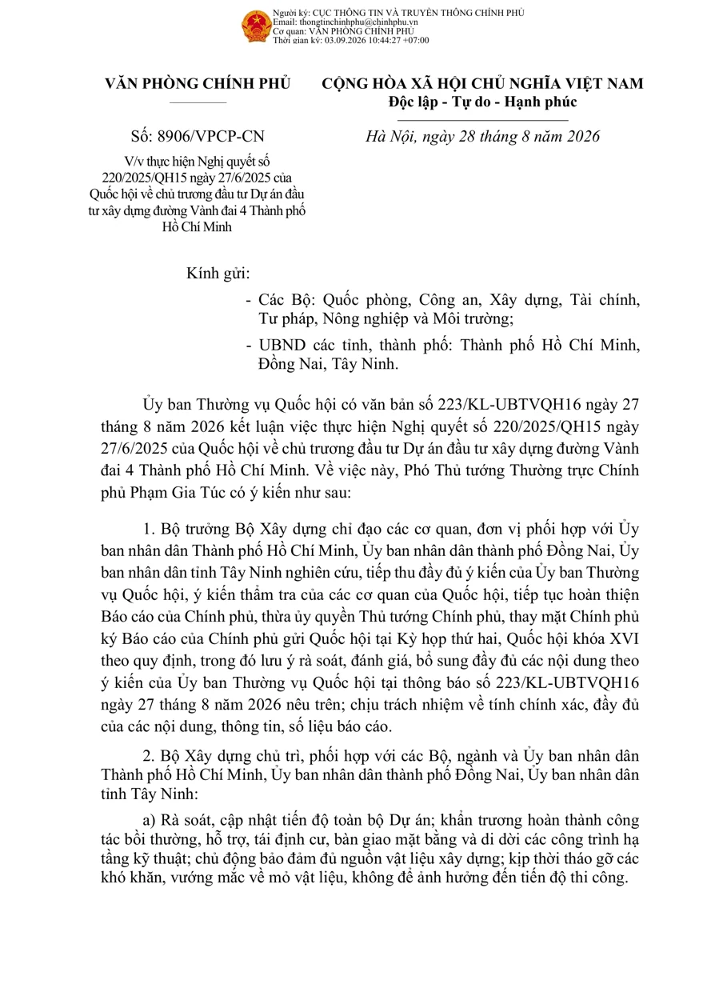
7/7 required đạt Optional recipients, first_recipients Missing.
Đúng được header chưa đồng nghĩa đúng cả văn bản
8931+VPCP-PL
4,42 giây · 1 trang
Ngày 29→19, cơ quan bị dính chữ; mức Hỏa tốc trả về Bình thường. FAIL 3 required.
8948+VPCP-CN
6,50 giây · 2 trang
Ngày Missing, Kính gửi Missing, chức danh người ký lẫn OCR rác. FAIL vì ngày.
29+CT-TTg
7,76 giây · 4 trang
Header chính Exact, nhưng mất mức Hỏa tốc; tên người ký sai và chức danh Missing. FAIL vì độ khẩn.
35/100 tài liệu đạt; PoC còn cách 45 tài liệu
Document Success@5%
35 PASS / 100 văn bản. PoC ≥80%; stretch ≥90%. Chưa đạt.
Trung bình / văn bản
Wall-clock, tính trên 100 PDF; số trang rất không đồng đều.
Trung bình / trang*
*Trung bình của 100 giá trị (giây/file ÷ trang/file); khoảng 1,14–5,85.
RAM tiến trình
2.745 MB trung bình / 6.012 MB đỉnh.
Bộ nhớ GPU — phải nói đúng phạm vi
Device VRAM 3.077 / 6.793 MB (trung bình/đỉnh, toàn GPU). Process VRAM: chưa đo được, không điền 0 hay thay bằng framework allocator.
Bundle gốc vẫn có dòng receiverDate từ lúc policy cũ; bản báo cáo này loại field đó theo chuẩn hiện hành. Document Success dùng 7 required field nên không đổi.
Điểm nghẽn: chức danh ký, trích yếu, ngày
Tín hiệu tích cực
province F1 0,984 — field duy nhất đạt đủ target đánh giá.
type, security_level F1 1,00 nhưng chưa đánh giá đầy đủ lớp hiếm / mẫu GT trống.
Không có Hallucination trong các field có GT trống ở bundle này; không suy ra hiệu năng trên lớp chưa được phủ.
Cần ưu tiên cải thiện
| Field | F1 | Wrong + Missing |
|---|---|---|
signer_title | 0,380 | 51 + 12 |
title | 0,670 | 31 + 3 |
officeSender | 0,735 | 24 + 4 |
documentDate | 0,785 | 10 + 19 |
receiverDate ngoài phạm vi chấm hiện hành. Phân bố nhóm nguyên nhân nằm ở slide riêng và có ghi rõ cỡ mẫu.
Critical + required: F1 (precision, recall) / NEM
| Field — tiếng Việt (key) | F1 (precision, recall) / NEM |
|---|---|
Loại văn bản (type) | 1,000 (1,000, 1,000) / 1,000 * |
Trích yếu (title) | 0,670 (0,680, 0,660) / 0,400 |
Số, ký hiệu (code) | 0,850 (0,850, 0,850) / 0,850 * |
Ngày ban hành (documentDate) | 0,785 (0,877, 0,710) / 0,710 |
Cơ quan ban hành (officeSender) | 0,735 (0,750, 0,720) / 0,670 |
Độ khẩn (priority_level) | 0,950 (0,950, 0,950) / 0,950 * |
Độ mật (security_level) | 1,000 (1,000, 1,000) / 1,000 * |
* Các con số đạt ngưỡng chưa đồng nghĩa “đánh giá đầy đủ” nếu thiếu mẫu GT trống hoặc lớp enum. Trạng thái trong bundle lưu target cũ, bảng này dùng giá trị metric gốc.
Optional: F1 (precision, recall) / NEM
| Nhóm / Field — tiếng Việt (key) | F1 (precision, recall) / NEM |
|---|---|
Critical · Nơi nhận (recipients) | 0,885 (0,948, 0,830) / 0,341 |
Critical · Người ký (signer) | 0,802 (0,869, 0,745) / 0,745 |
Critical · Kính gửi (first_recipients) | 0,667 (0,810, 0,567) / 0,500 |
Critical · Chức danh người ký (signer_title) | 0,380 (0,407, 0,357) / 0,296 |
Non-critical · Địa danh (province) | 0,984 (0,990, 0,979) / 0,979 |
Hallucination rate giữ ngưỡng cũ: ≤ 0,01; riêng Địa danh (province) ≤ 0,02. receiverDate không nằm trong bảng này.
Một ký tự OCR có thể làm hỏng trường bắt buộc
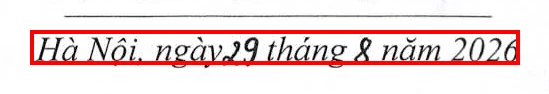
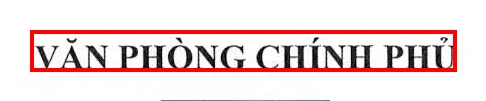
Nhận định: extraction đi theo OCR nguồn; cần xem lại nhận dạng vùng header. Metadata ghi tài liệu có chữ viết tay, nhưng chưa đủ bằng chứng để quy lỗi cụ thể cho chữ viết tay ở hai vùng này.
Trace: 8931/trace.json · rules issuance-date, upper-left-organization.
Header đúng, nhưng mức khẩn và cụm ký vẫn rớt
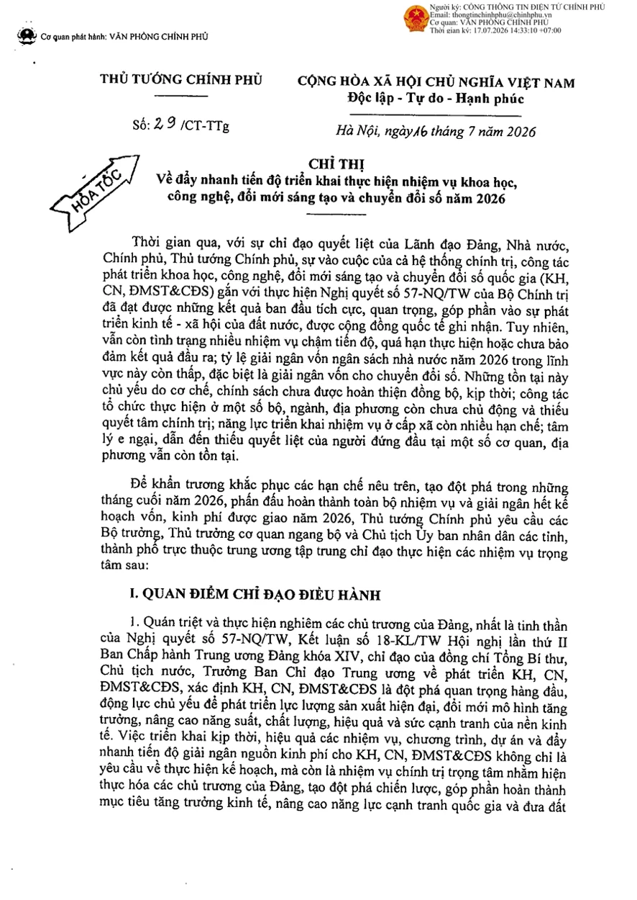
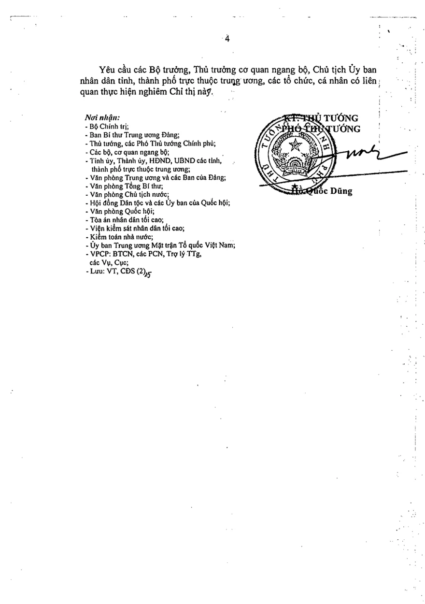
Nhận định: vùng dấu/chữ ký là điểm cần review trên ảnh màu; OCR nguồn của signer là “Huốc Dũng”. Chưa khẳng định dấu đã gây ra toàn bộ lỗi nếu không khoanh trực tiếp được vùng bị đè.
Trace: 29+CT/trace.json · signature-name trang 4; priority không có evidence.
Vùng text lẫn nội dung: trích yếu và cơ quan bị kéo sai
12+NQ-PVIRe · title Wrong
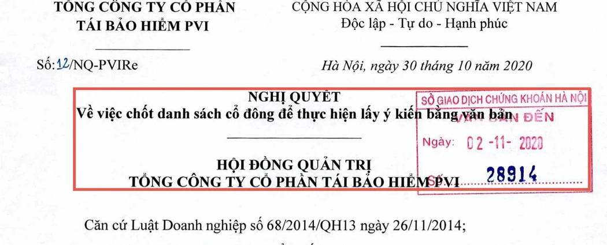
text-after-document-type.GT: “Về việc chốt danh sách cổ đông…”
Pred: thêm “SỞ GIAO DỊCH CHỨNG KHOÁN HÀ NỘI … HỘI ĐỒNG QUẢN TRỊ”.
240+TB-PVIRe · officeSender Wrong
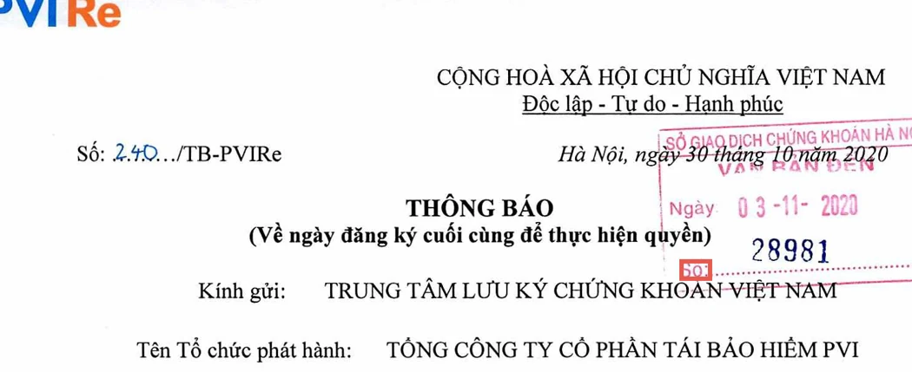
upper-left-organization.GT: “TỔNG CÔNG TY CỔ PHẦN TÁI BẢO HIỂM PVI”
Pred: “Số:” · bắt nhầm anchor làm cơ quan ban hành.
Nhận định: kiểm tra phân vùng và hình học trước khi nới regex; khung đỏ là bbox prediction evidence, không phải vị trí GT đã xác nhận.
OCR có text, hậu xử lý vẫn giữ nhầm một “stub”
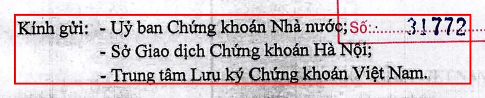
kinh-gui-anchor, bbox [473, 616, 1450, 767].Nguồn OCR/evidence chứa “Kính gửi: - Uỷ ban…; số 1.772 - Sở…”. Lỗi đáng thử ở bước lọc stub khi tách danh sách; vẫn cần regression test để tránh xóa số thật trong tên người nhận.
Trace: 2125/trace.json.
Không thấy evidence ≠ GT ở vị trí mình đoán
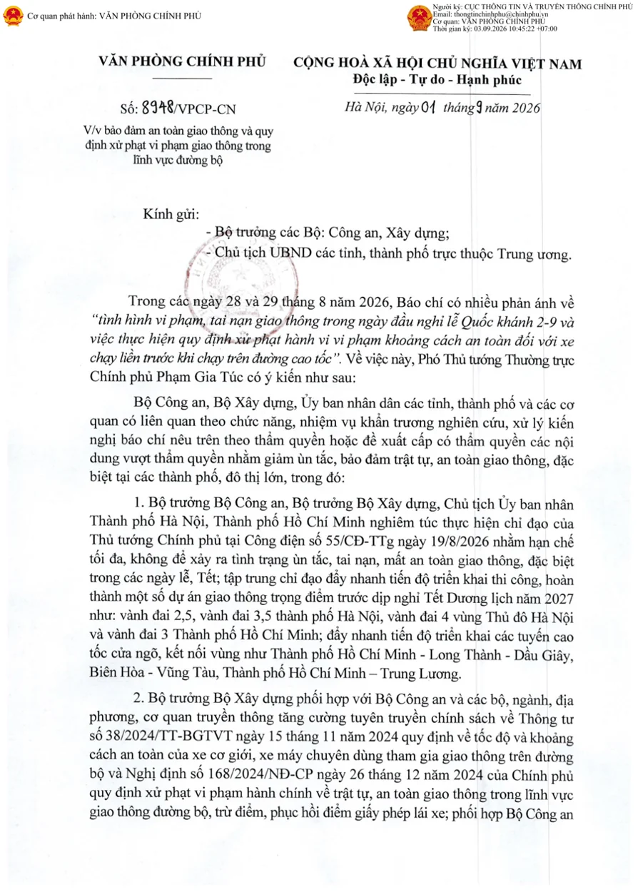
Nhận định: cần soi layout/OCR trang đầu và ranh giới văn bản trước khi quyết định fallback. Pipeline không bịa giá trị ngày khi không đọc được.
Bundle này không có bucket Hallucination ở những field có mẫu GT trống; đây là tín hiệu tốt, không thay thế đánh giá lớp hiếm.
Trace: 8948/trace.json.
Không phải mọi bucket Wrong đều là OCR đọc sai
03+BC.HĐQT · dấu phân cách code
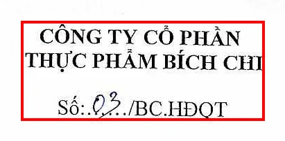
GT: 03/BC.HĐQT · Pred: 03/BC-HĐQT.
Quy tắc API biến dấu cách còn lại thành -; cần xác nhận cách gán GT đối với dấu ..
27+2026+VBHN · ND hay NĐ?
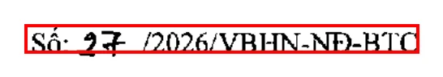
GT: 27/2026/VBHN-ND-BTC · Pred: 27/2026/VBHN-NĐ-BTC.
Ảnh/trace ủng hộ chữ Đ; cần người gán nhãn xác nhận, không tự sửa GT.
Hai record vẫn được benchmark chấm Wrong; slide chỉ nêu nghi vấn và evidence, không tự ý đổi nhãn hoặc nâng điểm.
229 ô field lỗi — phân loại sơ bộ 4 nhóm
Mẫu số: 156 Wrong + 73 Missing. Không tính receiverDate và các bucket đạt.
216 ô gán nhãn heuristic; 8 case đối chiếu evidence và 5 dấu “HỎA TỐC” đối chiếu ảnh trang 1. Chưa review toàn bộ: nhóm Khác gồm thiếu evidence/nghi vấn GT, không khẳng định nguyên nhân đã xác nhận. Bảng audit: error_cause_full_inference_v3.csv.
Khả thi để tiếp tục R&D; chưa đủ điều kiện thay thế
Đã chứng minh
- Pipeline chạy end-to-end trên 100 PDF, có API dữ liệu cấu trúc.
- Có GT, benchmark version hóa, ảnh trang, OCR và trace để lặp lại quá trình phân tích.
- Có case print/scan hoạt động tốt; có thể ưu tiên cải thiện theo trường.
Chưa chứng minh
- 35% Document Success vẫn cách target PoC 80%.
- Mẫu lớp mật/khẩn hiếm và tài liệu chụp nghiêng/ngang chưa đủ coverage.
- Chưa có đo chi phí và benchmark đối chứng đủ điều kiện để kết luận thay thế API hiện tại.
Tradeoff: tổng quát hóa vs. overfit mẫu quen; chất lượng vs. GPU; khả năng hiểu ngữ cảnh vs. thời gian chạy. Nhóm cũng cần hỗ trợ hạ tầng và phản biện chuyên môn/mentor để thử các phương án mạnh hơn.
Ưu tiên accuracy, sau đó mới tối ưu vận hành
Bổ sung coverage
Thêm hard cases: dấu đỏ, chữ viết tay, trang nghiêng/ngang, lớp mật/khẩn và văn bản dài. Rà soát GT theo policy đã chốt; tách train/dev/test nếu fine-tune.
Đánh đúng bottleneck
Benchmark riêng OCR; thử model chữ viết tay và xử lý dấu/watermark; cải thiện ranh giới văn bản/trang cuối; chuẩn hóa tập giá trị hữu hạn khi có evidence.
Không mất chất lượng cũ
Regression test sau mỗi thay đổi. Đạt accuracy target rồi mới tối ưu tốc độ → tài nguyên → chi phí → pilot/UAT có kiểm soát.
Chúng ta biết pipeline đang sai ở đâu — và đo được khi nào nó tốt hơn
Đạt Document Success@5% ở lượt full inference hiện tại.
Mốc PoC cần hướng tới, cùng bộ metric và GT snapshot.
Ảnh, OCR, bbox, GT và prediction giúp ưu tiên đúng nơi cần sửa.